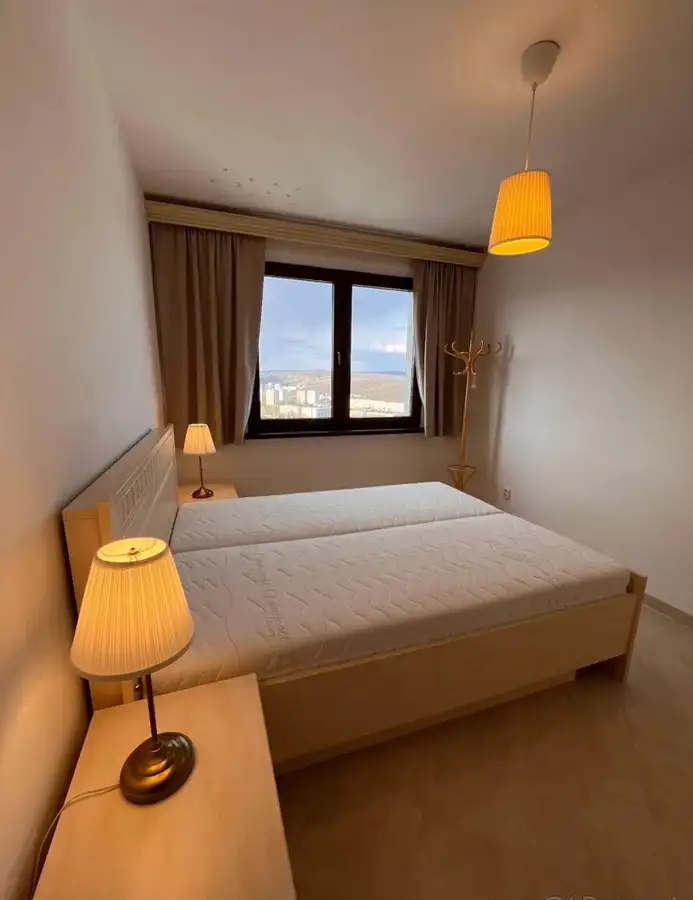
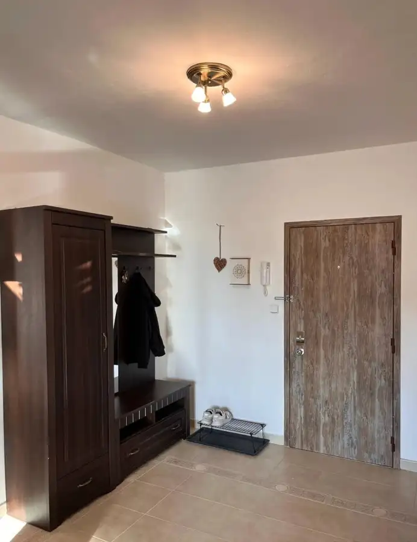
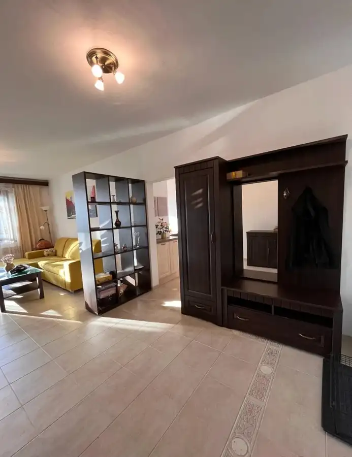
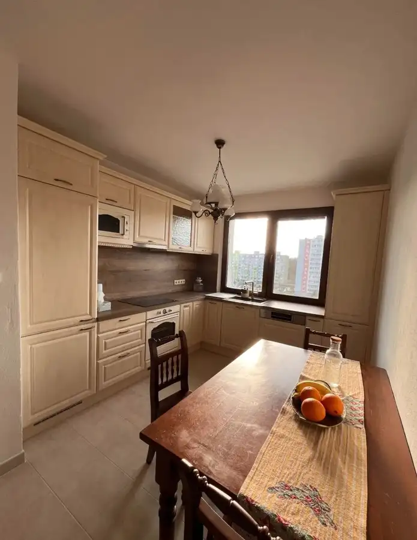
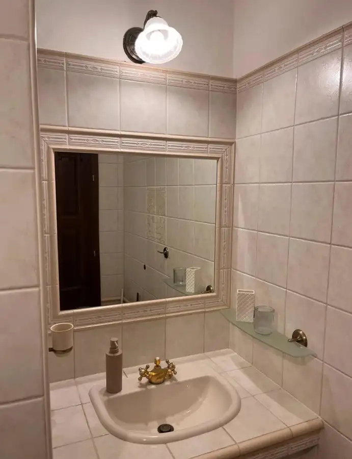
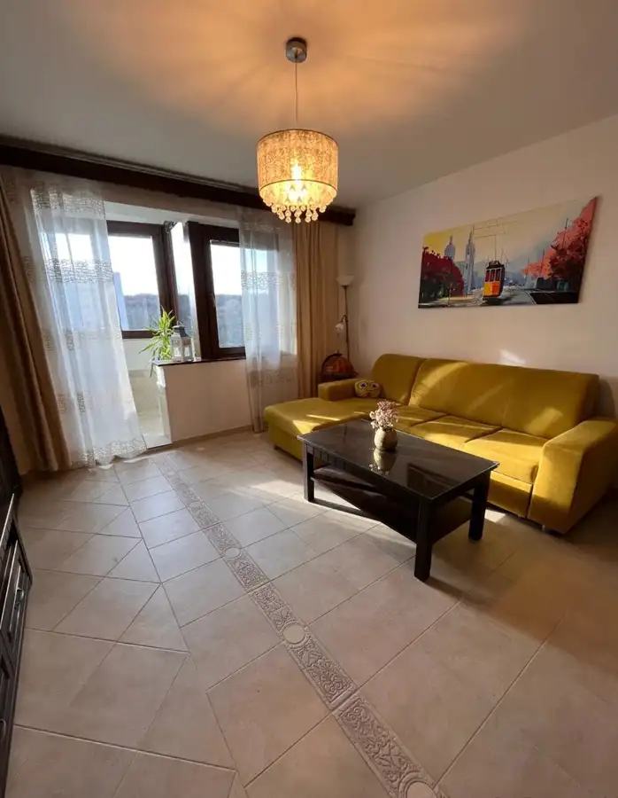
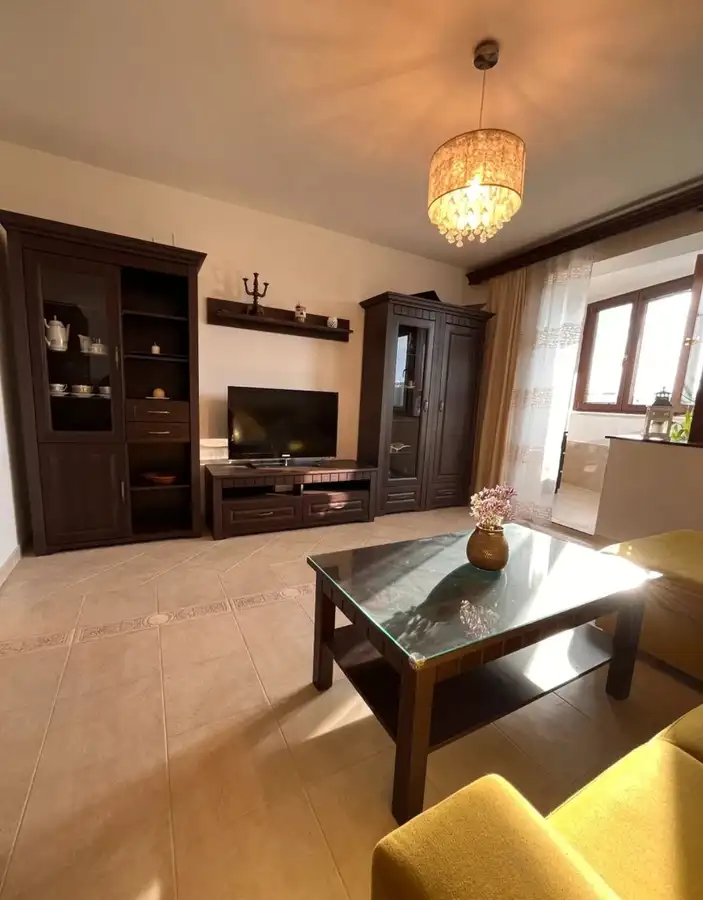
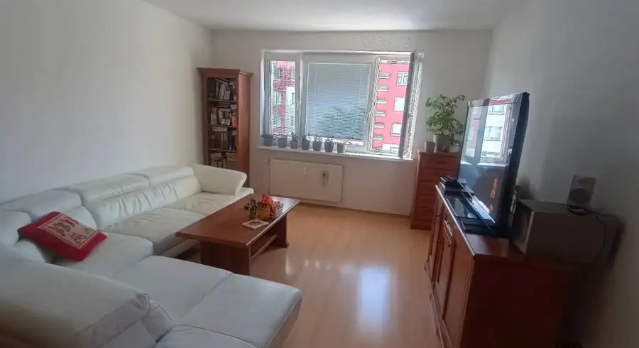
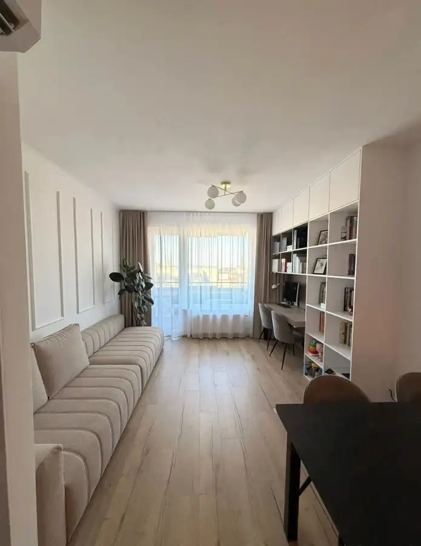
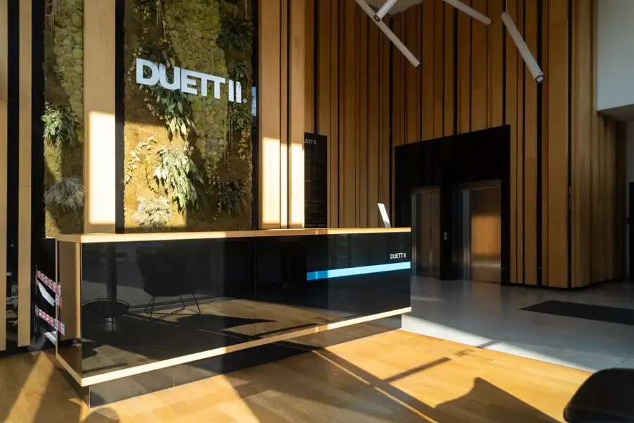

MDG | TOP PONUKA: 3-izb. byt na Beniakovej ul., BA IV
Karlova Ves, Bratislava







- Dispozícia3-izbový
- Plocha66 m²
- Poschodie12. z 1
- StavČiastočná rekonštrukcia
- Energetická triedaB
O nehnuteľnosti
Realitná kancelária MDG Reality ponúka na predaj svetlý a nadštandardne vybavený 3-izbový byt s úžitkovou plochou 66 m² na Beniakovej 5 v Karlovej Vsi. Byt sa nachádza na 12. poschodí a ponúka panoramatické výhľady, dostatok prirodzeného svetla a vysokú mieru súkromia. Výnimočným benefitom je umiestnenie bytu bez spoločných stien so susednými bytmi na poschodí.BYTTyp: 3-izbový bytÚžitková plocha: 66 m²Poschodie: 12. poschodieBalkón: ÁnoVykurovanie: Podlahové kúrenieLokalita: Bratislava – Dlhé dielyVÝHODYposchodie s panoramatickými výhľadmižiadne spoločné steny so susednými bytmi na poschodívysoká miera súkromiasvetlý a vzdušný interiérbalkón prístupný z obývacej izbynová kompletne vybavená kuchyňapodlahové kúrenie s centrálnym riadenímkvalitné materiály a vybaveniepráčka so sušičkourobotický vysávačflexibilné využitie tretej izbykonečná zastávka MHD v bezprostrednej blízkostiblízkosť lesa a prírodyvhodný pre jednotlivca, pár aj rodinuDISPOZÍCIAByt ponúka praktickú 3-izbovú dispozíciu s priestrannou dennou časťou. Obývacia izba je svetlá a vzdušná, pričom priamo nadväzuje na balkón s panoramatickým výhľadom.Kuchyňa disponuje novou kuchynskou linkou s dostatkom pracovnej plochy a úložného priestoru vrátane potravinovej skrine. Súčasťou vybavenia je indukčná varná doska, elektrická rúra, mikrovlnná rúra, umývačka riadu a No Frost chladnička s mrazničkou. Priestor dopĺňa jedálenský kút.Tretia izba ponúka variabilné využitie ako detská izba, pracovňa alebo hosťovská izba.VYBAVENIEByt je dokončený vo vyššom štandarde a vybavený modernými technológiami. Tepelný komfort zabezpečuje podlahové kúrenie ovládané centrálnou riadiacou jednotkou.V kúpeľni sa nachádza práčka so sušičkou a súčasťou vybavenia zostáva aj robotický vysávač.SÚKROMIE A VÝHĽADJednou z hlavných predností nehnuteľnosti je jej umiestnenie na 12. poschodí. Byt poskytuje panoramatické výhľady a zároveň nemá na poschodí žiadne spoločné steny so susednými bytmi, čo výrazne prispieva k súkromiu a pokojnému bývaniu.LOKALITADlhé diely ponúkajú kombináciu mestského bývania a bezprostrednej dostupnosti prírody. V blízkosti sa nachádza les a možnosti na prechádzky, beh, cyklistiku či turistiku.Byt sa nachádza priamo pri konečnej zastávke MHD, ktorá zabezpečuje pohodlné spojenie s ostatnými časťami Bratislavy. Lokalita zároveň poskytuje občiansku vybavenosť potrebnú pre každodenný život.CENA255.000 €V prípade záujmu nás neváhajte kontaktovať, radi pre Vás zorganizujeme obhliadku.Pavol Jurček, Konateľ+421 918 129 466jurcek@mdgreality.skText, 3D obhliadka a fotografie sú autorským dielom a majetkom realitnej kancelárie MDG Reality.
Parametre
- Cena vrátane energií
- Nie
- Druh
- 3 izbový byt
- Dátum zverejnenia
- 18. 09. 2026
- Energetický certifikát budovy
- B
- Podlažie
- 12
- Počet nadzemných podlaží
- 1
- Rok výstavby
- 2000
- Stav nehnuteľnosti
- Čiastočná rekonštrukcia
- Typ
- Predaj
- Typ konštrukcie
- Tehlová
- Umiestnenie
- Ďalšie nadzemné podlažie
- Úžitková plocha
- 66 m²
Kde to je


Mohlo by Vás zaujímať

BytNové 268 000 €MDG | Na predaj 3-izb. byt na Jedľovej ul., BA II Vrakuňa, Bratislava 3-izbový75 m²6. podlažie
BytNové 385 000 €MDG | Na predaj luxusný 3-izb. byt, RÍNOK - RAČA, BA III Rača, Bratislava 3-izbový76 m²6. podlažie
Komerčné priestoryNové 2 114 €MDG | Priestranná kancelária na prenájom, DUETT II Staré Mesto, Košice 98.33 m²